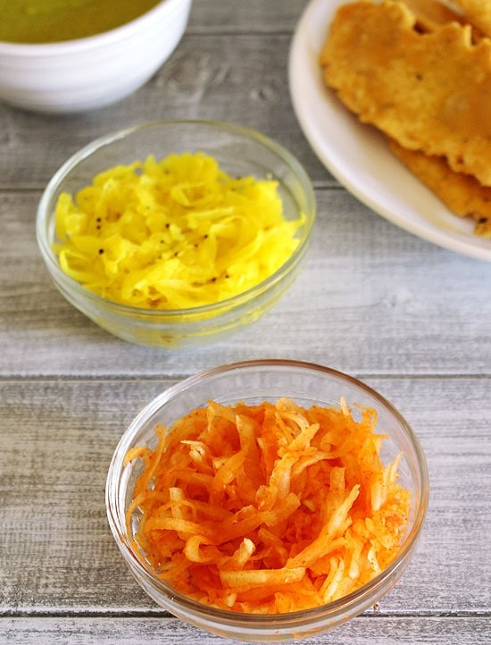

Papaya Sambharo

Ingredients:
1 tablespoon Oil
½ teaspoon Mustard seeds
2-3 Green chilies (Make a vertical cut only and keep them whole)
⅛ teaspoon Hing (Asafoetida)
½ teaspoon Turmeric powder
1 ½ cups Raw/Unripe papaya (peel the skin, seeds removed and grated)
Salt to taste
1 cup Raw/Unripe papaya (peel the skin, seeds removed and grated)
½ teaspoon Red chili powder , Increase the quantity if you like spicy